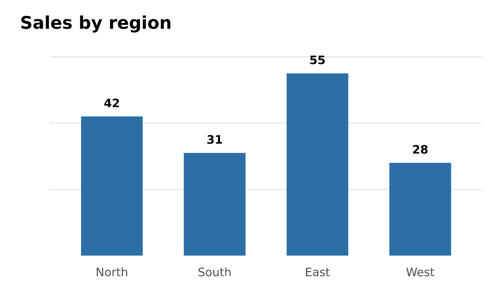

A picture of a plot pasted into a slide can only be resized. vellum writes a scene to PowerPoint as editable shapes instead: every mark is a DrawingML shape you can select, recolour or move, every label is a text box you can retype, and every named panel is a group you can ungroup. The layout is the one vellum solved for the PNG, SVG and PDF, so the slide matches the other formats.
You need no other package to write a deck. officer is optional, for putting a scene on a slide of a deck you build with it.
A scene on a slide
Here is a small chart, built as an ordinary scene:
region <- c("North", "South", "East", "West")
sales <- c(42, 31, 55, 28)
alt <- "Bar chart of unit sales. East is highest at 55, West lowest at 28."
chart <- vl_scene(6, 3.4, dpi = 96, bg = "white",
title = "Sales by region", desc = alt) |>
draw(text_grob("Sales by region", x = 0.04, y = 0.92, just = "left",
gp = vl_gpar(fontsize = 15, fontface = "bold"))) |>
push(vl_viewport(x = 0.53, y = 0.45, width = 0.86, height = 0.7,
xscale = c(0.4, 4.6), yscale = c(0, 60), name = "panel")) |>
draw(segments_grob(0, vl_unit(c(20, 40, 60), "native"),
1, vl_unit(c(20, 40, 60), "native"),
gp = vl_gpar(col = "grey88"))) |>
draw(rect_grob(x = vl_unit(1:4, "native"), y = vl_unit(sales / 2, "native"),
width = vl_unit(0.6, "native"), height = vl_unit(sales, "native"),
gp = vl_gpar(fill = "#2c6fa6", col = NA),
key = region)) |>
draw(text_grob(md(paste0("**", sales, "**")), x = vl_unit(1:4, "native"),
y = vl_unit(sales + 4, "native"), gp = vl_gpar(fontsize = 10))) |>
draw(text_grob(region, x = vl_unit(1:4, "native"), y = vl_unit(-5, "native"),
gp = vl_gpar(fontsize = 10, col = "grey30"))) |>
pop()
display(chart)
render() writes it to a one-slide PowerPoint file when
the path ends in .pptx. The slide is the size of the
scene.
To see what went in, list the shapes on the slide. A
.pptx file is a zip archive, and the slide is an XML file
inside it:
slide_xml <- function(path, n = 1) {
dir <- tempfile()
utils::unzip(path, exdir = dir)
paste(readLines(file.path(dir, "ppt", "slides", sprintf("slide%d.xml", n)),
warn = FALSE), collapse = "")
}
count <- function(x, pattern) lengths(regmatches(x, gregexpr(pattern, x)))
x <- slide_xml(path)
c(groups = count(x, "<p:grpSp[ >]"), shapes = count(x, "<p:sp>"),
pictures = count(x, "<p:pic>"))
#> groups shapes pictures
#> 2 15 0
regmatches(x, gregexpr("<a:t>[^<]*</a:t>", x))[[1]]
#> [1] "<a:t>Sales by region</a:t>" "<a:t>42</a:t>"
#> [3] "<a:t>31</a:t>" "<a:t>55</a:t>"
#> [5] "<a:t>28</a:t>" "<a:t>North</a:t>"
#> [7] "<a:t>South</a:t>" "<a:t>East</a:t>"
#> [9] "<a:t>West</a:t>"There are two groups, one for the whole scene and one for the
viewport named "panel", and no pictures. The shapes are the
bars, the gridlines and the text boxes. The text is real text: the
title, the bar labels and the region names are text runs PowerPoint can
edit. The **bold** of an md() label stays
bold, and each styled span of a rich label is a run of its own.
Several slides
pptx_pages() writes a deck with one slide per scene. A
presentation has a single slide size, so the deck takes the largest
scene’s size and centres any smaller scene on its slide.
small <- vl_scene(4, 2.4, dpi = 96, bg = "white") |>
draw(circle_grob(r = 0.3, gp = vl_gpar(fill = "#2c6fa6", col = NA))) |>
draw(text_grob("a second slide", y = 0.1, gp = vl_gpar(fontsize = 12)))
deck <- tempfile(fileext = ".pptx")
pptx_pages(list(chart, small), deck)The file is byte-for-byte reproducible: it carries no timestamp, user
name or software version, so writing the same scenes twice gives the
same bytes. With path = NULL, pptx_pages()
returns those bytes instead of writing a file.
identical(pptx_pages(list(chart, small)), pptx_pages(list(chart, small)))
#> [1] TRUEThat makes a deck safe to commit and to compare in a test, the same way vellum’s PNG and PDF output are.
Slides built with officer
If you build decks with officer, a scene goes
straight into officer::ph_with(). vellum registers the
method when officer is loaded; officer and xml2 are suggested packages,
not dependencies.
doc <- officer::read_pptx()
doc <- officer::add_slide(doc, layout = "Title and Content", master = "Office Theme")
doc <- officer::ph_with(doc, "Quarterly sales",
location = officer::ph_location_type("title"))
doc <- officer::ph_with(doc, chart, location = officer::ph_location_type("body"))
print(doc, target = tempfile(fileext = ".pptx"))By default the scene is laid out again at the size of the placeholder
(resize = TRUE), exactly as render() would lay
it out at that size. Text keeps its point size and nothing is stretched.
resize = FALSE keeps the scene’s own size, anchored at the
placeholder’s top-left corner.
Anything else as_vellum_scene() can compile goes in
through as_dml(). For a vellumplot plot:
library(vellumplot)
p <- vplot(mtcars) |> mark_point(x = wt, y = mpg)
doc <- officer::ph_with(doc, as_dml(p), location = officer::ph_location_type("body"))
# or without officer
render_plot(p, "cars.pptx")
pptx_pages(list(p, p), "deck.pptx")Text and fonts
A text box names the font vellum measured its label with. PowerPoint uses that font when the machine opening the deck has it, and substitutes another when it does not. The box is anchored at the label’s anchor, so a wider substitute font grows away from it: right-aligned tick labels stay right-aligned. Vertically, the text sits on the box’s bottom edge whatever the label’s justification. LibreOffice assumes a fixed line, 1.0 em above the baseline and 0.2 em below, whatever the font, so a label sits where vellum draws it when the font’s descent is about 0.2 em and lower by the excess for a deeper one (Avenir Next, Hoefler Text). Keynote follows the font’s own metrics; PowerPoint itself has not been checked. Fonts are not embedded.
text = "outline" (in render(),
pptx_pages(), as_dml() and
officer::ph_with()) writes the glyph outlines instead. The
slide then looks the same on every machine, but the labels can no longer
be edited as text.
Some labels are outlines in either mode, as in SVG:
| label | in PowerPoint |
|---|---|
| plain text | a text run |
md() label |
a text run per styled span (bold, italic, colour; ^sup^
and ~sub~ as raised or lowered runs) |
md() label with inline $math$
|
outlines |
tex() and plotmath() labels |
outlines |
| text with a halo | outlines |
text on a path (text_path_grob()) |
outlines |
What stays a shape, and what becomes a picture
DrawingML is a smaller drawing model than vellum’s, so a few features are translated, and a few are drawn as a picture.
- Shapes. Paths, polygons and lines become freeform shapes baked to slide coordinates. Axis-aligned rectangles and circles stay preset rectangles and ellipses. Strokes keep their width, cap, join and dash, and colours keep their alpha.
- Points. A layer of points is written as a few shapes instead of one per point: points of one style that do not overlap share a shape, so a 10,000-point scatter is a few hundred shapes. Each is still an editable freeform.
- Clipping. DrawingML cannot clip, so clipped geometry is cut in advance. Fills are cut to their visible area, strokes along their centre line, and pictures are cropped. A native text label crossing a clip edge is drawn whole, with a warning; outlined text is cut exactly.
-
Gradients and patterns. Linear and radial gradients
become native gradient fills (a radial gradient’s focal point moves to
its centre, with a warning). A
vl_pattern()fill becomes a tiled picture fill. Avl_hatch()fill is geometry, so it stays shapes. - Group opacity. Opacity over shapes that do not overlap is folded into their colours, which is what the group would composite to.
- Pictures. Masks, blend modes, blur and shadow effects, and group opacity over overlapping shapes cannot be expressed. Each is drawn through the raster backend as a picture of the region it covers, with a warning. The slide looks right, but that part cannot be edited. Rasters are pictures too.
masked <- vl_scene(3, 2, dpi = 96, bg = "white") |>
push(vl_viewport(mask = as_mask(circle_grob(r = 0.4, gp = vl_gpar(fill = "black"))))) |>
draw(rect_grob(gp = vl_gpar(fill = "#2c6fa6", col = NA))) |>
pop()
render(masked, "masked.pptx")
#> Warning: This render could not be fully reproduced on the target backend:
#> • masks are drawn as a picture of the region they coverLibreOffice is not a reliable preview for some of these. It drops gradients with translucent stops and the transparency of tiled pattern pictures, and places an off-centre radial gradient differently. Check the deck in PowerPoint itself.
For a chart whose data stays editable in PowerPoint, see the mschart package. vellum writes the drawing, not the data behind it.
Alt text
A scene’s title and desc, set in
vl_scene() or with describe(), become the name
and the alt text of the group that holds the slide’s shapes. With no
desc, the title is the alt text too:
regmatches(x, regexpr('<p:cNvPr [^>]*descr="[^"]*"/>', x))
#> [1] "<p:cNvPr id=\"2\" name=\"Sales by region\" descr=\"Bar chart of unit sales. East is highest at 55, West lowest at 28.\"/>"That is the text in PowerPoint’s Alt Text pane. Through
officer::ph_with() the group takes the placeholder’s name
instead of the title, and keeps the alt text. Per-mark role
and name, which build a tagged PDF’s structure tree, are
not written to the slide; see
vignette("accessible-output").
Where to go next
-
vignette("output-formats"): how PowerPoint compares with PNG, SVG and PDF. -
?as_dmland?pptx_pages: the full reference.